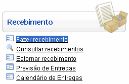
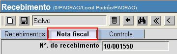

Recebimento [ Voltar ]
Este
manual exibe o passo-a-passo para:
- Efetuar um
recebimento
- Registrar ocorrências
- Anexar
documentos e imagens a um recebimento
Recebimento
Para criar um
recebimento de mercadorias, clique no formulário "Fazer recebimento", que se encontra no menu "Recebimento".

Ao clicar no nome do
formulário, o sistema abrirá a seguinte tela:
Siga os passos abaixo
para registrar um recebimento.
1º
Passo: informe os dados principais do recebimento em questão.
- N°. do recebimento. Este
campo apresenta por padrão um sinal de mais "+". Desta forma, assim que
o recebimento é salvo, é-lhe atribuído o próximo número de recebimento
disponível.
- Local
de recebimento. Este campo é populado com o local onde o
usuário se encontra.
- Cód. do
fornecedor. Informe aqui o código do fornecedor do qual se
está efetuando o recebimento. Este campo é obrigatório.
- Observações. Se
necessário, clique no botão
 [Procurar] ao lado do
campo "Cód.
Fornecedor" para visualizar uma lista contendo
todos os fornecedores cadastrados no
sistema. A pesquisa poderá ser feita
pela razão social, CNPJ, nome fantasia, dentre outros campos do
cadastro
de fornecedores. Certifique-se de selecionar o favorito desejado no
topo da tela: Pessoa
Física ou Pessoa
Jurídica. Selecione com um clique o fornecedor desejado.
[Procurar] ao lado do
campo "Cód.
Fornecedor" para visualizar uma lista contendo
todos os fornecedores cadastrados no
sistema. A pesquisa poderá ser feita
pela razão social, CNPJ, nome fantasia, dentre outros campos do
cadastro
de fornecedores. Certifique-se de selecionar o favorito desejado no
topo da tela: Pessoa
Física ou Pessoa
Jurídica. Selecione com um clique o fornecedor desejado.
- Processo
SES (Compra). Você pode informar aqui o número do
processo de compra da Secretaria de Saúde.
- Ordem
de fornecimento. Este campo não está disponível nesta
etapa do recebimento.
- Status
do recebimento. É exibida aqui a situação atual do
recebimento. O status pode ser:
- Não
processado: o registro do recebimento foi criado, mas
ainda é preciso informar todos os dados necessários e processá-lo;
- Processado:
registro já processado. É possível imprimir os relatórios de
recebimento contábil e físico;
- Estornado:
este status indica que o recebimento foi processado e, estornado,
posteriormente.
2° Passo: clique no botão  para salvar o recebimento.
Uma grade para a inclusão dos produtos do recebimento será exibida na
parte inferior da tela. para salvar o recebimento.
Uma grade para a inclusão dos produtos do recebimento será exibida na
parte inferior da tela.
3º Passo: informe o código da ordem de caso, se for
o caso, ou insira manualmente os produtos
recebidos.
Se este for um recebimento originado por uma ordem de fornecimento,
especifique-a no campo de mesmo nome. Se necessário, clique no botão
[Procurar] (ver imagem abaixo) para selecioná-la a partir de uma
listagem contendo as ordens cadastradas. Em seguida, clique no botão  para carregar automaticamente
os produtos contidos na ordem. para carregar automaticamente
os produtos contidos na ordem.

Se este recebimento não tiver sido originado por uma ordem de
fornecimento, digite
na grade o código e a quantidade dos produtos deste
recebimento. Caso não saiba o código do mesmo, clique no botão
[Procurar] para pesquisá-lo pelo
nome, descrição, grupo, etc. Ao
utilizar a pesquisa, certifique-se de selecionar a opção
desejada
na seção "Favoritos" no topo da tela de busca (ver imagem abaixo). As opções de pesquisa são:
- Padrão: esta pesquisa retorna tanto
medicamentos quanto materiais médico-hospitalares;
- Medicamentos: utilize esta pesquisa para
retornar apenas os medicamentos cadastrados;
- Todos
Produtos:
esta pesquisa retorna todos os produtos cadastrados e exibe os dados
gerais destes na tabela de resultados.
- Materiais
Médico-Hospitalares:
utilize
esta pesquisa para retornar apenas os materiais cadastrados.
Após
inserir as informações de
um produto, pressione a tecla "Enter" ou "Tab" ou clique no botão
"Novo" da grade para adicionar novos produtos a este
recebimento. Repita
esta operação para inserir
todos os itens do recebimento.
4° Passo: na aba
"Nota Fiscal", informe o preço unitário dos produtos recebidos. Clique na aba "Nota Fiscal" e,
no campo "Preço unitário", digite o custo individual de cada produto.

5º Passo: clique no botão para salvar o
recebimento.
6º Passo: confirme o recebimento. Se todos os dados estiverem
corretos, clique no botão  para confirmar o recebimento.
Após a confirmação, a
aba "Inspeção" estará disponível para conferência
física. para confirmar o recebimento.
Após a confirmação, a
aba "Inspeção" estará disponível para conferência
física.
Observação: após
a confirmação do recebimento, será possível desfazê-la por meio do botão  [Desconfirmar]. Este
procedimento poderá ser realizado a qualquer momento desde que o
recebimento não tenha sido processado. [Desconfirmar]. Este
procedimento poderá ser realizado a qualquer momento desde que o
recebimento não tenha sido processado.
7º Passo: clique
na aba "Inspeção" para inserir os dados da conferência
física. Será
necessário informar o "N°.
do lote", "Prazo
de validade" (quando aplicável) e "Endereço
de Armazenagem"
para cada produto recebido.
8°
Passo: clique no
botão para salvar
o recebimento.
9º
Passo: se todos dados estiverem corretos, clique no botão  para concluir o recebimento. para concluir o recebimento.
Observação:
caso o botão de processar esteja indisponível, posicione o
cursor
do mouse sobre o botão para saber a causa da indisponibilidade.
10° Passo: imprimir relatórios de
recebimento contábil e físico. Após o
processamento do recebimento, os botões  e e  serão habilitados para
permitir a visualização da tela de impressão dos dois relatórios. serão habilitados para
permitir a visualização da tela de impressão dos dois relatórios.
11° Passo: após clicar no botão
referente ao relatório desejado, clique no botão  [Imprimir]
do navegador para processar a impressão do relatório. [Imprimir]
do navegador para processar a impressão do relatório.
Registrar
ocorrências [
Voltar
]
Uma
vez cadastrado o recebimento, a qualquer momento é possível
registrar uma ocorrência a ele relacionada. Para acessar a tela de
ocorrências, é preciso abrir o recebimento para o qual se deseja
registrar a ocorrência. Em seguida,
clique no botão  . .
A seguinte tela será exibida:
Siga os passos abaixo para registrar uma ocorrência referente ao
recebimento:
1° Passo: preencha
os detalhes desta ocorrência. Todos os campos são
obrigatórios.
- Cód. da
ocorrência.
Este campo apresenta por padrão um sinal de mais "+". Desta forma,
assim que a ocorrência é salva, é-lhe atribuída o próximo número
disponível.
- Motivo.
Selecione um dos motivos disponíveis. Os motivos disponíveis são:
- Produto(s)
divergente(s) da nota fiscal;
- Produto(s)
divergente(s) da nota de empenho;
- Quantidade(s) divergente(s)
da nota fiscal;
- Quantidade(s) divergente(s) da
nota de empenho;
- Divergência
de valores na nota fiscal;
- Embalagem
com material diferente da identificação;
- Embalagem
sem identificação;
- Embalagem
violada;
- Atraso
na entrega;
- Outros.
- Outro.
Se nenhum motivo se adequar perfeitamente à ocorrência, selecione o
motivo Outros e
informe neste campo o motivo em questão.
- Data.
Especifique aqui a data em que esta ocorrência foi constatada. Dicas para preenchimento de
campos de data:
- Data
atual: digite o sinal . (ponto) e
pressione a tecla "Enter" para que o sistema retorne a data atual;
- Data
do mês corrente: digite o dia do mês e
pressione a tecla "Enter" para que o sistema retorne o mês e ano
correntes;
- Dias
a contar da data atual: digite o sinal + (mais) ou - (menos)
antes do número de dias em em referência à data atual e pressione a
tecla "Enter" para a data anterior ou posterior à data atual.
- Observações.
Deposite neste campo informações adicionais sobre esta ocorrência.
2° Passo: clique no
botão para salvar a
ocorrência. Para cadastrar outra ocorrência, clique no
botão  [Novo]
e repita os passos 1 e 2. [Novo]
e repita os passos 1 e 2.
Clique no botão  [Voltar]
para retornar à tela principal do recebimento. [Voltar]
para retornar à tela principal do recebimento.
Anexar
documentos e imagens ao recebimento [
Voltar
]
Siga os passos
abaixo para anexar arquivos de texto e imagem (como notas
fiscais digitalizadas e imagens de produtos avariados) a
um recebimento.
1º Passo: abra o formulário "Fazer
recebimento",
que encontra-se
dentro do menu"Recebimento".
2° Passo: crie ou abra um recebimento existente para o qual deseja
carregar um documento. Clique no botão  [Procurar]
para visualizar uma lista contendo todos recebimentos existentes.
Selecione com um clique o recebimento desejado. [Procurar]
para visualizar uma lista contendo todos recebimentos existentes.
Selecione com um clique o recebimento desejado.
3º Passo: clique
no botão  para abrir o formulário
"Documentos e imagens do Recebimento". O botão encontra-se no canto superior
direito da tela "Recebimento". para abrir o formulário
"Documentos e imagens do Recebimento". O botão encontra-se no canto superior
direito da tela "Recebimento".
A seguinte tela será exibida:
4º Passo: informe na tela os detalhes do documento. Informe
o tipo de documento, adicione uma descrição para o documento ou imagem,
selecione o arquivo que deseja carregar (upload)
e, se necessário, especifique um link adicional da internet ou
intranet (www.linkexterno.com/arquivo.pdf, por exemplo). Para
especificar o caminho do arquivo, veja abaixo:
- Clique no botão
 [Upload de arquivos] para visualizar a tela de upload;
[Upload de arquivos] para visualizar a tela de upload;
5º Passo: por último, clique no
botão para
concluir a associação do arquivo ao recebimento.
Observação: se
desejar anexar outros documentos e imagens a este recebimento, clique
no botão [Novo]
e repita os passos 4 e 5.
Ir para o topo da página
|


 para
selecionar o arquivo que deseja carregar; e
para
selecionar o arquivo que deseja carregar; e